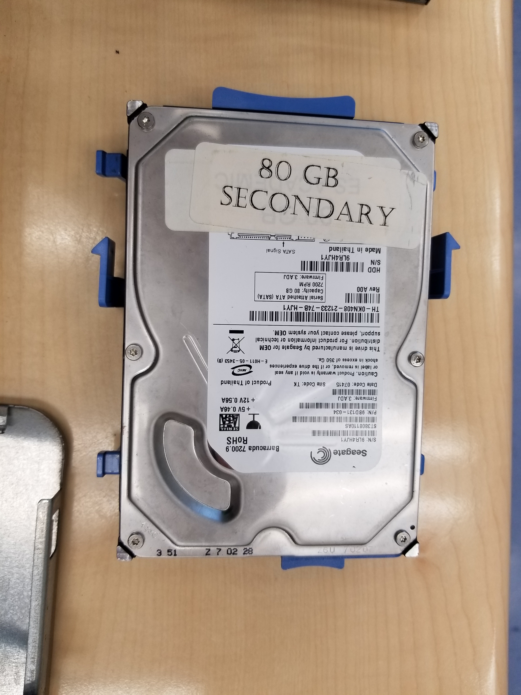

Beginning the “tear down” with a Dell Optiplex GX620 system unit.

Take off the side panel.

Take off the heatsink and its shroud with a screwdriver.

Unlatch the CPU socket and take out the CPU. Be sure to not bend the delicate pins.

Unplug the data cable connecting to the DVD drive.
Unplug the SATA data cable from the hard drive.

Unplug the CPU's power cable from the motherboard.

Unplug the power cable connecting to the hard drive.

Unplug the main power cable for the motherboard.

Unscrew and take out the power supply unit (PSU).

Take out the two RAM modules.

Unplug the fan cable and the power button cable.

Unscrew the motherboard and take the motherboard out.
Case without the motherboard.

Motherboard outside the case.

Optional: remove the metal panel that covers the expansion card slots.

Take out the floppy disk drive.

Take out the hard drive.
Detail of the two RAM modules.

Detail of the Intel Pentium 4 CPU.
Hard disk drive outside the system unit.

Floppy disk drive outside the system unit.

Fan outside the system unit.

All major hardware components outside the computer case.

Completely empty computer case. The following photos will show installation steps.
Install the hard disk drive in the system unit.

Install the motherboard into the system unit.

Install the daughterboard for the front I/O and audio jacks.

Install the heat sink bracket in the system unit.

Install the chassis intrusion sensor in the system unit.
Install the fan in the system unit.
Ensure you secure the motherboard completely with the remaining screws.

Connect the SATA cable to the hard drive and install the PSU.

Install the RAM modules onto the motherboard.

Connect all power and data cables.

Install the CPU onto the CPU socket. Make sure the retention arm is secure.

Install the heat sink with a screwdriver.

Finally, istall the DVD drive and connect its cables.

Finished installation of the hardware components inside the system unit.

Install the side panel back onto the system unit.
Back view of the system unit, showing assorted I/O ports.

Copyright © 2018 Vincent Zhang. All rights reserved.